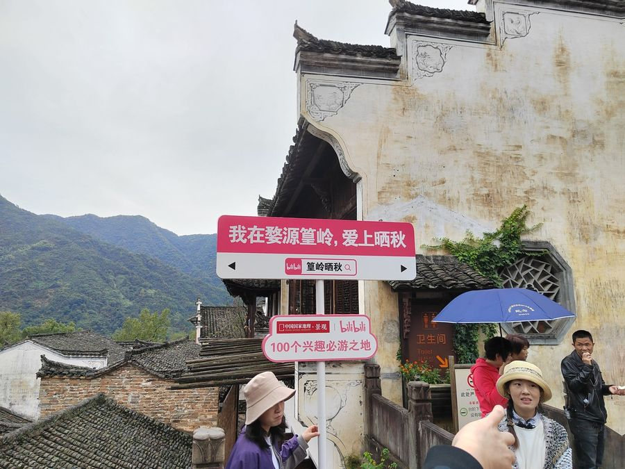
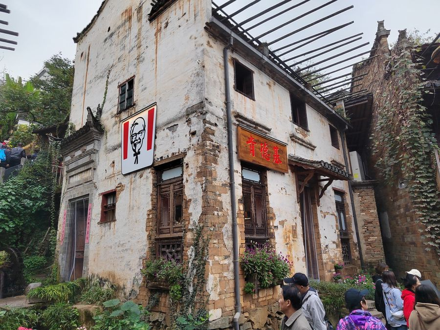
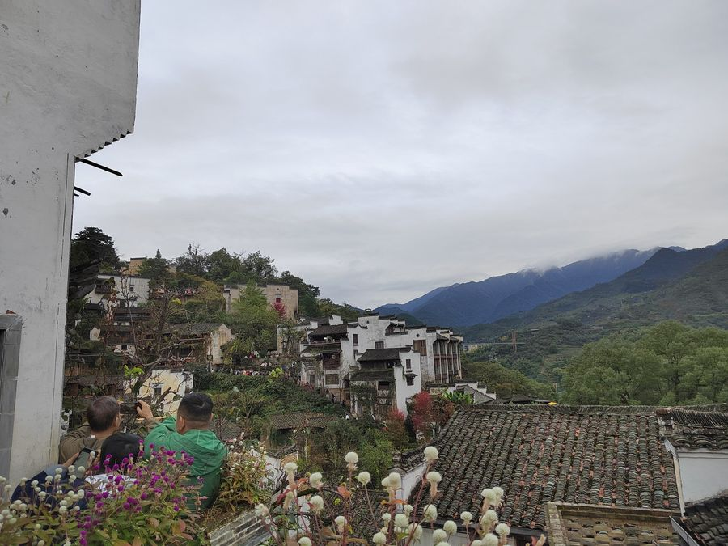
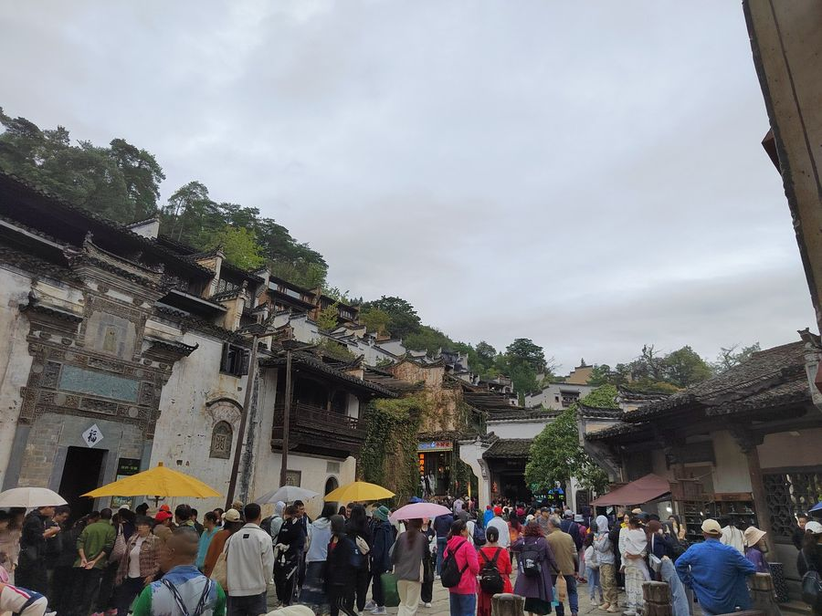
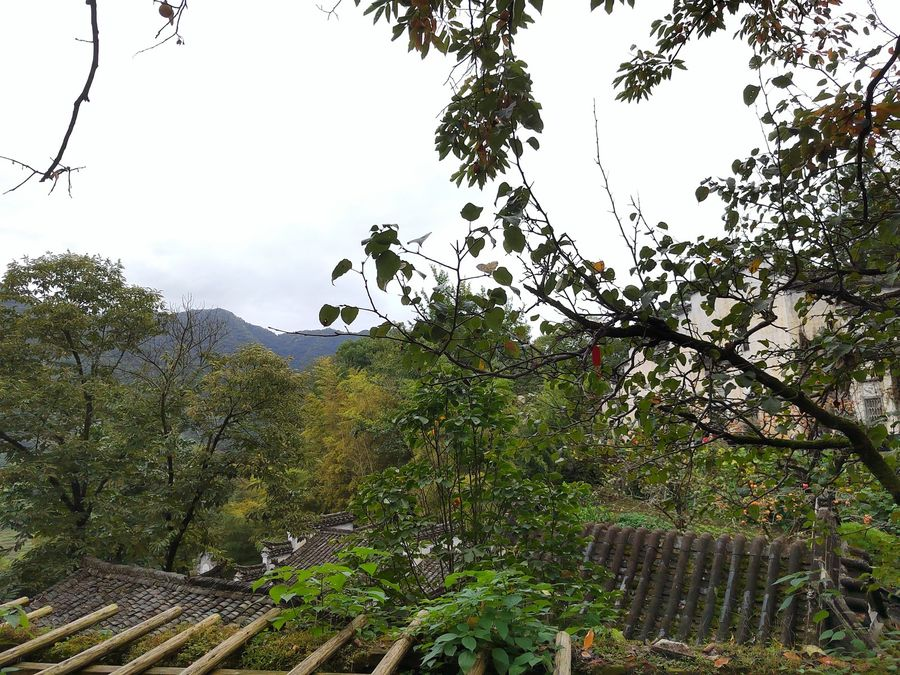

篁岭村 · 晒秋乡村体验图
当前：三小时精华线
正在定位五个点位…
三小时精华 · 4站
点击地图标记或上方点位即可查看名称与游玩提示；地图可缩放和拖动。
路线示意图 · 实际开放、索道与交通信息以现场为准
晒秋层：用红、橙、黄、绿四种颜色识别晒匾里的农作物与最佳观察点。
江西婺源篁岭乡村旅游地图
晒秋层：用红、橙、黄、绿四种颜色识别晒匾里的农作物与最佳观察点。
以下为篁岭古村实景照片，拍摄于2023年10月。照片用于建立空间感受，不代表当前季节、天气和实时开放状态。图片来自 Wikimedia Commons，摄影：沈澄心，CC0 公共领域。




